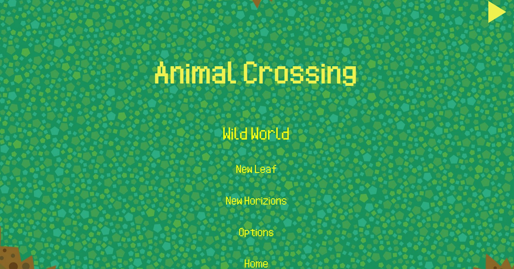

A simple electron based application that seeks to emulate the iconic music system from the animal crossing games. That is to say that the music changes based on the current hour of your system clock.
You might be wondering why someone would actually go through the trouble of doing this. The answer is simple really, I simply liked the music so much that I wished to listen to it while working on stuff IRL.

Try it in your browser!
(For a seamless experience turn on auto play in your browser settings,
but if not, just hit the play button in the top right corner).
All of the code can be found on my github. However, since I don't own the rights to the music, I am not able to provide the audio files so you will have to get the album yourself, and order the files correctly as detailed in the README in the soruce.
Source Code